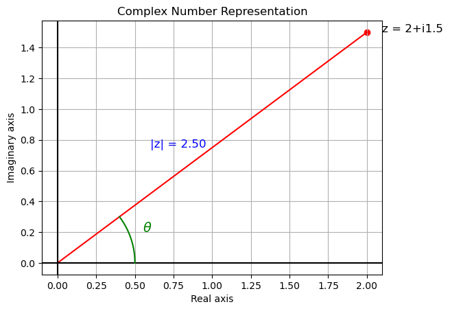

B8.1 Complex Numbers & Euler’s Formula for Waves#
B8.1.1 Motivation: Why Complex Numbers?#
Before we continue with quantum mechanics, we need a quick introduction on complex numbers.
Quantum Mechanics Uses Complex Wavefunctions#
In classical physics, waves are often written using sines and cosines.
In quantum mechanics, we instead describe matter waves using complex exponentials:
This is not because particles are “mysteriously complex.”
It’s because complex notation makes the math for waves, interference, and superposition much simpler.
Only the real part or the magnitude squared of \(\psi\) has direct physical meaning.
Why Learn This Now?#
We’ll use these ideas immediately in describing de Broglie matter waves and wave packets.
Later, in the Schrödinger equation, everything will be expressed in terms of complex wavefunctions.
By mastering a few simple properties of complex numbers now, you’ll make all the upcoming quantum math far easier.
B8.1.2 Complex Numbers Definition#
A complex number is written as:
\(a\) = real part
\(b\) = imaginary part
\(i = \sqrt{-1}\)
Geometric Representation#
On the complex plane:
Horizontal axis = real part \(a\)
Vertical axis = imaginary part \(b\)
The magnitude (or modulus):
The argument (or phase angle):
Thus, \(z\) can also be written in polar form:
B8.1.3 Visualization: Complex Number in the Plane#

B8.1.4 Complex Conjugate#
The complex conjugate of a number \(z = a + ib\) is:
Geometrically:
It is the reflection of \(z\) across the real axis in the complex plane.
In polar form:
If
then
Properties:
\(zz^* = |z|^2 = a^2 + b^2\)
\(\text{Real part of } z = \frac{z + z^*}{2}\)
(We will see, using Euler’s formula, that \(z^*\) simply flips the sign of \(\theta\) in the exponential representation.)
Box 1
Show by direct calculation that
B8.1.5 Euler ’s Formula#
The key link between complex numbers and waves is:
This follows from the Taylor series expansions for \(e^x\), \(\sin x\), and \(\cos x\) (we won’t derive it in detail here).
Connection to the Complex Conjugate#
From our earlier discussion:
If \(z = r(\cos\theta + i\sin\theta)\), then:
Using Euler’s formula, this becomes:
✔ The conjugate simply changes the sign of the angle \(\theta\).
Sine and Cosine from Exponentials#
Using Euler’s formula:
So all sines and cosines can be written in exponential form.
Box 2
Prove the two relationships:
B8.1.6 Complex Exponentials for Waves#
Plane Waves#
A real traveling wave is usually written:
But using Euler’s formula, we can write it compactly as:
The physical (real) wave is obtained by taking the real part:
Why Physicists Prefer \(e^{i\theta}\)#
✔ Differentiation & algebra are much simpler:
\(\frac{d}{dx} e^{i(kx-\omega t)} = i k e^{i(kx-\omega t)}\) (no need to handle separate sines & cosines)
Adding waves = just adding exponentials.
Thus, we will describe matter waves as \(e^{i(kx-\omega t)}\), even though only the real part has direct physical meaning.